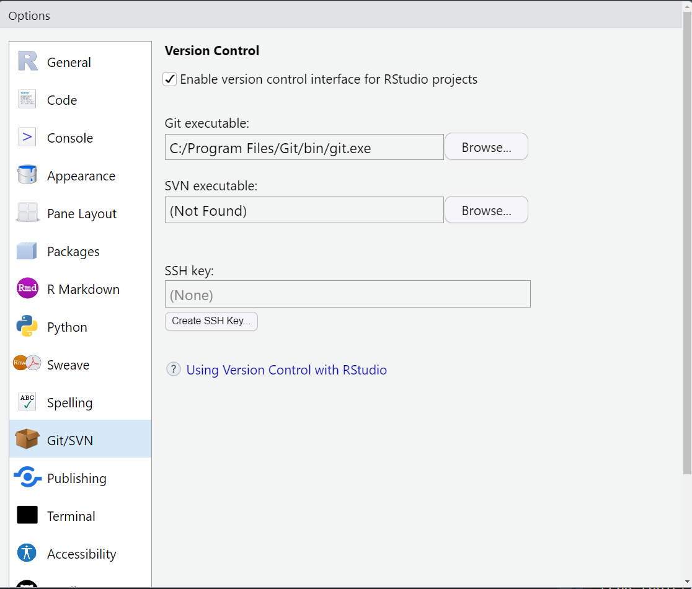
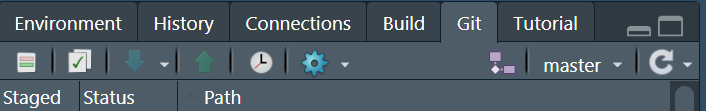
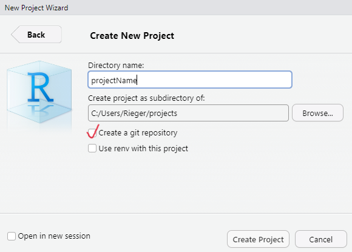
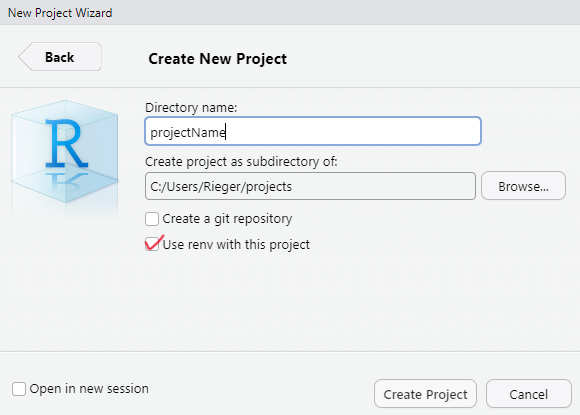
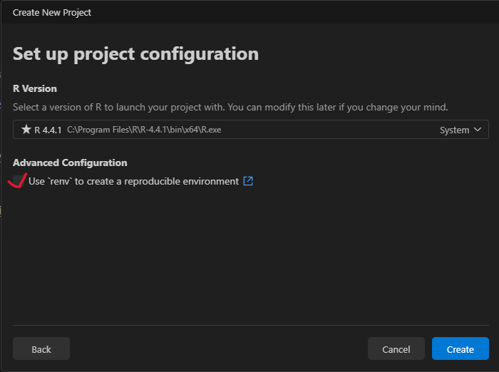

- 0
-
Use
c()function to combine any values into a character vector. - 1
-
The
file.path()function constructs platform-independent file paths. - 2
- No subdirectories in these two directories.
6 Setup a Project Environment
Important
This chapter is under active development.
6.1 Prerequisite
To follow this chapter, I assume that you are familiar with the basics of RStudio or Positron, R as a programming language and Quarto as a publishing system. If not, you can check out Chapter 2: Choose an IDE, Chapter 3: Introduction to R and Chapter 4: A not so short introduction to Quarto.
6.2 Working Directory
A robust project environment begins with a structured organization of data, code and output files within a working directory. This means, you should create a dedicated project folder with an informative name. The structure of this folder should look anything like in the following example. Different components of a project (i.e., data, code, and output-files) should be stored in separate directories.
.md = markdown, .qmd = quarto-markdown, .csv = comma-separated-values-format, .png = portable-network-graphics, .pdf = portable-document-format, yml = Yet Another Markup Language
ProjectName/
├── data/
│ ├── raw/ # Original datasets (read-only)
│ │ ├── rawData-1.csv
│ │ ├── rawData-2.csv
│ │ └── ...
│ ├── processed/ # Cleaned, processed and final datasets
│ │ ├── 01_dataCleaning.csv
│ │ ├── 02_dataTransformation.csv
│ │ ├── ...
│ │ └── dataToShare.csv
├── code/
│ ├── src/ # reusable (custom) functions, helper utilities
│ │ ├── _functions.r
│ │ └── ...
│ ├── scripts/ # scripts for data processing and analysis
│ │ ├── 01_dataCleaning.qmd
│ │ ├── 02_dataTransformation.qmd
│ │ ├── 03_analysis.qmd
│ │ └── ...
├── output/ # results
│ ├── figures/
│ │ ├── histogram.png
│ │ ├── resultPlot.png
│ │ └── ...
│ ├── tables/
│ │ ├── summaryTable.csv
│ │ └── ...
├── report.qmd # document that combines everything
├── report.pdf # aka rendered report.qmd
├── images/ # images that need to be included
├── README.md # provides a project overview
├── .gitignore # useful when using Git
├── _quarto.yml # Quarto Projects only
├── .Rprofile / renv.lock # information about evironment
├── codebook.md
└── ...To further strengthen the reproducibility of the project, adding a README.md file at the root of your working directory helps others to understand the structure, and usage of your project.
ImportantNo files outside the project folder!
Keep all project-related files inside the project folder. This ensures that the project is self-contained and can be shared or moved without breaking file references. This means, within a project, do not hard-code absolute paths (e.g., C:/Users/YourName/Documents/ProjectName/data/raw/...). Instead, use paths relative to the project root (e.g., data/raw/...). Accordingly, using setwd() inside project code is usually a sign of fragile code, as it introduces a hidden state and makes execution dependent on where and how the code is run.
If you are struggling with file paths, consider using the here package (Müller, 2025), which constructs paths relative to the project root in a robust way.
See also Chapter 3.1: We need to talk about setwd("path/that/only/works/on/my/machine") of the online book What They Forgot to Teach You About R
6.2.1 Create a working directory (project folder)
The easiest way to create (and manage) a working directory is to use the project feature provided by your IDE. This feature differs between RStudio and Positron. While RStudio uses so-called R Projects, Positron uses the Visual Studio Code approach of workspaces and folders.
See also Chapter 6: Workflow: scripts and projects of the book [R for Data Science]
CautionExercise: Create a working directory through your IDE! (5 min)
During project initialization, you can choose to create a Git repository and/or to use the renv package (Ushey & Wickham, 2026). For a reproducible project setup, it is best practice to use both: Git for version control and renv for project environment management.
NoteGit option when creating a project
The Git option may not be available if Git is not installed on your system. How to install Git and a (very) brief overview of its functionality can be found below in the section Version control via Git .
6.2.2 Create (sub)directories (programmatically)
First, create a file (File > New File > R Script) and name it, for example, create_dirs.R. Next, to efficiently create all (sub)directories, you need to define a character vector that contains all the directories (paths).
ImportantThese directories will be created in the current working directory!
You may want to check the working directory using getwd() function. If you created a R Project, this is most likely not an issue, because the working directory is set to the project folder.
6.3 Version control via Git
6.3.1 What is version control and why you should use it?
How to start with Git? → Book on Git
Tracking and recording changes for all kind of files (within a project) over time through an additional program
- Backup: Records the history of your project and allows for easy recovery of earlier versions
- Collaboration: It allows multiple people to work on the same project without overwriting each other’s work.
- Understanding & Traceability: It helps to track why changes were made, who made them, and when
“Track Changes” features from Microsoft Word on steroids (https://happygitwithr.com/big-picture)
6.3.2 Git Basics
- Repository (Repo): The place where your project lives. It contains all the files and the entire revision history.
- Commit: Making a commit is making a snapshot of your repository at a specific time point. Each commit records the current state of your project and has a unique identifier.
- Branch: A branch may be a separate line of project development (e.g., to try out new ideas in a isolated area). The ‘main’ (or previous ‘master’) branch is usually considered the definitive branch.
- Merge: Merging means to incorporate changes from a different branch into the the main branch.
- Pull Request: When collaborating, you make changes in your branch and then ask others to review and merge them. This request is called a pull request.
- Clone: Making a local copy of a remote repository.
- Fork: Copy a project from somebody else without affecting the original project.
Happy Git and GitHub for the useR: https://happygitwithr.com/
6.4 Git in IDEs
Download & install Git : https://git-scm.com/downloads
While installing Git on Windows is straightforward (just run git-current-version.exe), on macOS it requires an additional step of installing a package manager (here: Homebrew), before proceeding with the Git installation.
WarningGit installation for macOS only.
Copy and paste the following comand in a macOS terminal. Follow the steps.
/bin/bash -c "$(curl -fsSL https://raw.githubusercontent.com/Homebrew/install/HEAD/install.sh)"Then:
$ brew install git- Go to Tools > Global Options > Git/SVN
- Click Enable version control interface for RStudio projects
- If necessary, enter the path for your Git where provided.

It will then appear in the Environment, History, and Connections pane.

Enable it when creating a R project: Click ‘Create a git repository’

Positron usually detects Git . Because Positron is a fork of the IDE Visual Studio Code, it has integrated source control management (SCM) and includes Git support. If you encounter any problem, you find help here: https://code.visualstudio.com/docs/sourcecontrol/overview
After installation, you might want to check the installed version of git. Copy and paste the following comand in the terminal.
git --version6.4.1 Combine it with GitHub
GitHub provides a home for Git-based projects and allows other people to see the project … forgejo .. gitlab
6.5 Creating a reproducible environment: The renv package
In R, the renv package (Ushey & Wickham, 2026) is desigend to create a reproducible environment.
How does it work? When initiating a project with the renv package, it…
creates a separate library (instead of having one library containing the packages used in all projects)
creates a lockfile (i.e.,
renv.lock) that records metadata about all packagescreates a
.Rprofilefile that is automatically run every time you start the project
WarningBut…no panacea for reproducibility
The renv package does not help with the R version, Pandoc (R Markdown and Quarto rely on pandoc) and the operating system, versions of system libraries, compiler versions.
6.6
Recommendation: Initiate the package when creating a R project. Alternativey, call the renv::init() function to set up the project infrastructure.
renv::init()

6.6.1 renv.lock
The renv.lock file captures the exact state of an R project’s environment (stored as a JSON2 format).
6.6.1.1 After initialization
{
"R": {
"Version": "4.4.1",
"Repositories": [
{
"Name": "CRAN",
"URL": "https://packagemanager.posit.co/cran/latest"
}
]
},
"Packages": {
"renv": {
"Package": "renv",
"Version": "1.0.9",
"Source": "Repository",
"Repository": "CRAN",
"Requirements": [
"utils"
],
"Hash": "ef233f0e9064fc88c898b340c9add5c2"
}
}
}6.6.1.2 Monitoring (used) packages
CautionExercise (10min)
To understand the functionality of the package:
- Create a
Rscript - Install any package (e.g.,
jsonlite, Ooms, 2025) - Use a function of the package (e.g.,
toJSON())
- Call
renv::snapshot():
The updated renv.lock file looks now as follows:
{
"R": {
"Version": "4.4.1",
"Repositories": [
{
"Name": "CRAN",
"URL": "https://packagemanager.posit.co/cran/latest"
}
]
},
"Packages": {
"jsonlite": {
"Package": "jsonlite",
"Version": "1.8.9",
"Source": "Repository",
"Repository": "CRAN",
"Requirements": [
"methods"
],
"Hash": "4e993b65c2c3ffbffce7bb3e2c6f832b"
},
"renv": {
"Package": "renv",
"Version": "1.0.9",
"Source": "Repository",
"Repository": "CRAN",
"Requirements": [
"utils"
],
"Hash": "ef233f0e9064fc88c898b340c9add5c2"
}
}
}The renv package offers more useful functions such as renv::restore() or renv::upodate() (see the package documentation: https://rstudio.github.io/renv/articles/renv.html).
6.6.2 .Rprofile
In general, the .Rprofile file is a user-controllable file that enables the user to set default options (e.g., options(digits = 4)) and environment variables either on the user or the project level (see here). The .Rprofile file is run automatically every time you start R or a certain project.
In the context of renv package, it sources the activate.R script that was created by the renv package. Recall, this script is run, everytime you (or somebody else) open(s) the project and creates the project environment (e.g., project-specific library).
source("renv/activate.R")
ImportantCollaboration and the use of version control
Ensure that renv.lock, .Rprofile, renv/settings.json, and renv/activate.R are commited to version control. Without these files, the environment cannot be recreated.
6.7 Full in: Docker
– work in progress –